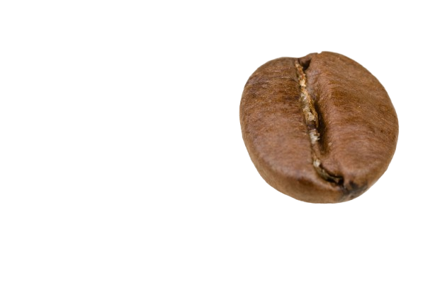

The Roasted Beans started in 2020 with one simple idea — coffee should taste like someone actually cared about it. What began as a single espresso machine in a small corner shop has grown into a neighborhood favorite, but the goal hasn't changed: honest ingredients, careful roasting, and a space where people actually want to sit and stay a while.
Every bean we use is sourced from small local roasters, and our menu changes with the seasons because we'd rather serve you something fresh than something "standard."